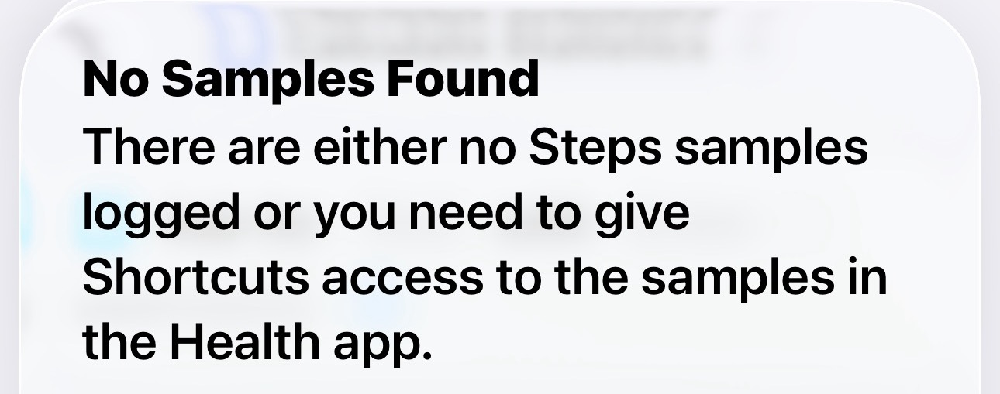
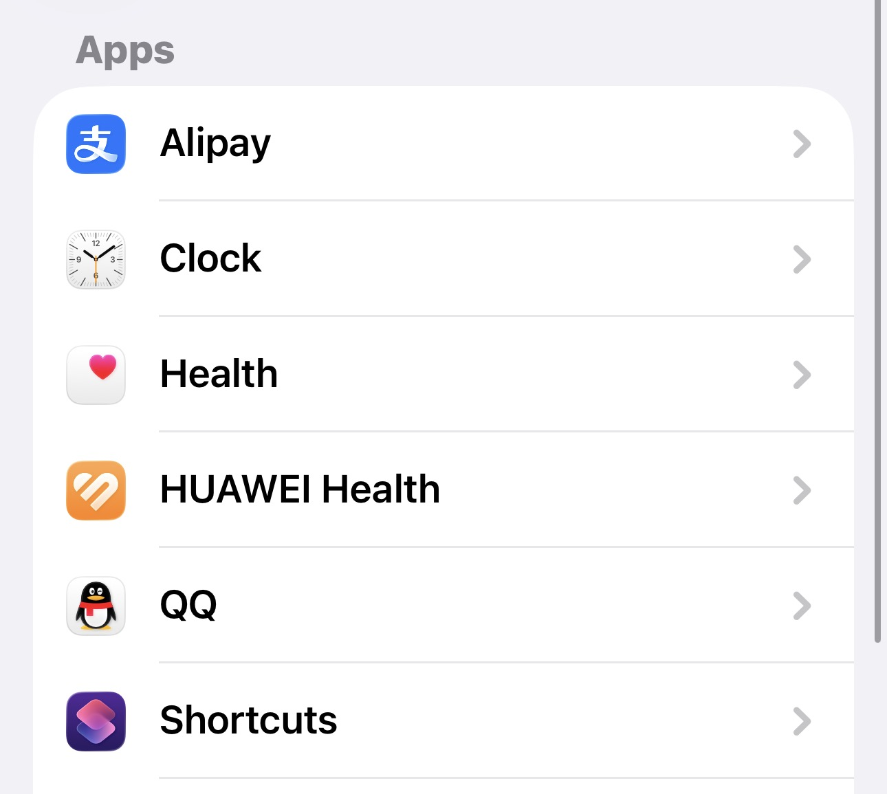
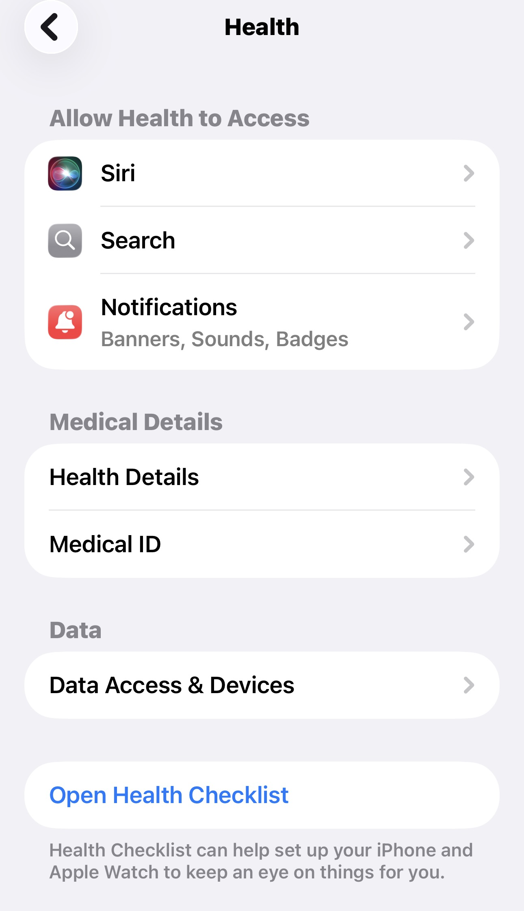
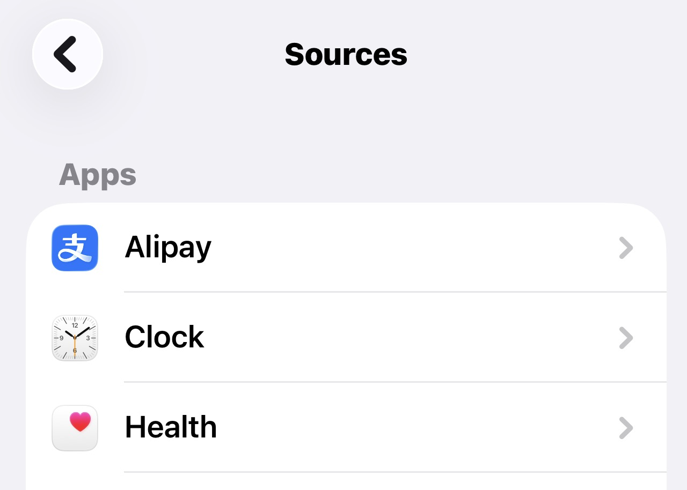
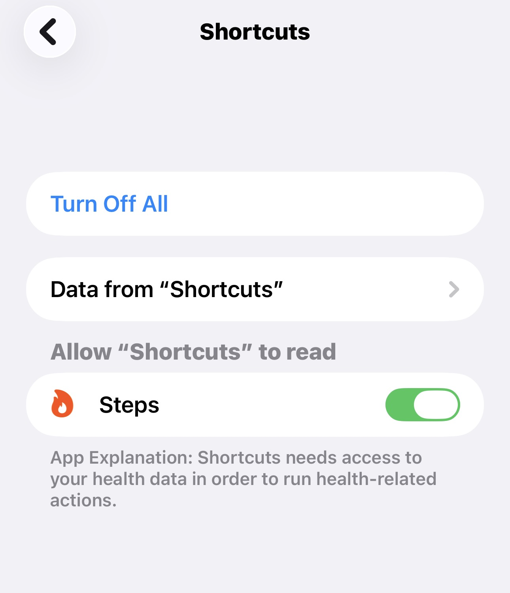
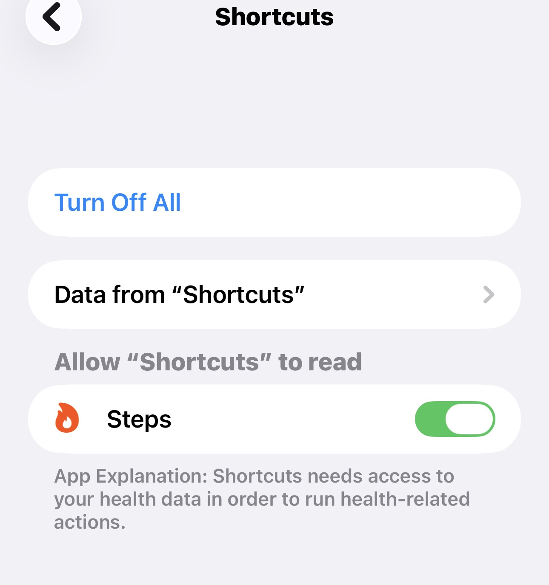

No Samples Found
This is the common warning shown before Health permission is granted.

VitalPet Setup
Scan the QR code with your iPhone camera, then add the VitalPet shortcut.
VitalPet Health Sync
If you tapped Don't Allow before, open Settings and turn Steps back on for Shortcuts.
Go to Settings, scroll to Apps, then choose Health.

Inside Health, tap Data Access & Devices, then find Shortcuts in the app sources.


If the top button says Turn Off All and Steps is green, the setup is correct.


Settings > Apps > Health > Data Access & Devices > Shortcuts > Steps